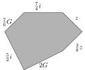

Section1.9Variables, Expressions, and Equations Chapter Review
Variables and Evaluating Expressions.
A variable represents an unknown quantity, or a quantity that can change. Algebra often uses \(x\) as the variable, but any letter or word can work as a variable. We also often use a letter that stands for something, like \(g\) for gas mileage.
When a variable represents a physical quantity, be clear about which units of measurement apply. For example, if \(g\) measures gas mileage in miles per gallon, that is different from \(g\) measuring gas mileage in liters per kilometer.
An algebraic expression is any combination of variables and numbers using arithmetic operations like addition, multiplication, etc. Algebraic expressions can be evaluated. This means substituting values in for the variable(s).
Be careful when evaluating an algebraic expression at a negative number. It helps to wrap parentheses around any negative number you substitute in.
Checkpoint1.9.1.
(a)
Let be the depth of a swimming pool, measured in .
Explanation.
The unknown quantity is depth, which starts with “d”. We generally measure depth in feet for a swimming pool. (Meters is another reasonable unit.) So we could define this variable as:
“Let \(d\) be the depth of a swimming pool, measured in feet.”
(b)
Let be the weight of a dog, measured in .
Explanation.
The weight of the dog is the unknown quantity, and “weight” starts with “w”. We generally measure the weight of a dog in pounds. (Kilograms is another reasonable unit.) So we could define this variable as:
“Let \(w\) be the weight of a dog, measured in pounds.”
Checkpoint1.9.2.
Evaluate the expression for the given value of the variable.
\({2\mathopen{}\left(u+3\right)+3}\) for \(u=-7\)
Explanation.
Substitute \(-7\) in for the variable \(u\) and simplify:
In an algebraic expression, terms are pieces of the expression that are added together. For example, the terms in \(2x^2-5x+7\) are \(2x^2\text{,}\)\(-5x\text{,}\) and \(7\text{.}\)
Terms are different from factors, which are pieces of an algebraic expression that are multiplied together. For example, the factors of \(2x(x+5)\) are \(2\text{,}\)\(x\text{,}\) and \((x+5)\text{.}\)
Whenever terms are similar enough that they can be combined and simplified, they are called like terms. Like terms typically are some number multiplied by a variable, with the same variable in each term. But like terms can also have the same units of measure or the same radical factor in place of the variable. Or they can have the same power of a variable. Each of these expressions has two like terms:
Like terms arise in applications where it makes sense to add some things together, and it might happen that the terms you have to add are similar enough to be called like terms. For example, finding a perimeter of a polygon might be an application of combining like terms, if the sides of the polygon are each labeled as a number times some common variable.
Checkpoint1.9.4.
List the terms in each expression.
\({52V-4.1l - {\frac{3}{2}}V+V}\)
Explanation.
The terms are the pieces being added together. Any piece that is subtracted from other pieces can be viewed as adding a negative. So the terms are \({52V, -4.1l, -{\frac{3}{2}}V, V}\text{.}\)
Checkpoint1.9.5.
Simplify the expression by combining like terms if possible.
\({{\frac{9}{7}}D+f+{\frac{1}{2}}f}\)
Explanation.
There are two \(f\)-terms. Their coefficients are \({{\frac{1}{2}}}\) and \({1}\text{.}\) We can add those two terms by adding their coefficients to get \({{\frac{3}{2}}}\text{.}\) So the expression simplifies to \({\frac{3}{2}f+\frac{9}{7}D}\text{.}\)
Checkpoint1.9.6.
Write a simplified expression for the perimeter of the given shape (which is not drawn to scale).
Explanation.
The perimeter is the result from adding the six sides together: \(27l + k + l + 3.9k + l + 81k\text{.}\) There are three \(k\)-terms and three \(l\)-terms. We combine each triple of like terms and the perimeter is \({85.9k+29l}\text{.}\)
Comparison Symbols and Notation for Intervals.
The symbols used for comparing two quantities are as follows:
Symbol
Means
True
True
False
\(=\)
equals
\(13=13\)
\(\frac{5}{4}=1.25\)
\(5\reject{=}6\)
\(\gt\)
is greater than
\(13\gt11\)
\(\pi\gt3\)
\(9\reject{\gt}9\)
\(\geq\)
is greater than or equal to
\(13\geq11\)
\(3\geq3\)
\(10.2\reject{\geq}11.2\)
\(\lt\)
is less than
\(-3\lt8\)
\(\frac{1}{2}\lt\frac{2}{3}\)
\(2\reject{\lt}-2\)
\(\leq\)
is less than or equal to
\(-3\leq8\)
\(3\leq3\)
\(\frac{4}{5}\reject{\leq}\frac{3}{5}\)
\(\neq\)
is not equal to
\(10\neq20\)
\(\frac{1}{2}\neq1.2\)
\(\frac{3}{8}\reject{\neq}0.375\)
An interval is a collection of numbers on a number line that are all connected. We illustrate intervals with a number line, where some portion of the number line is shaded. To clear up whether or not an endpoint of the shaded region is part off the interval, we use brackets (to include that number) or parentheses (to exclude that number). An interval might extend forever in one direction, and then the graph uses an arrowhead. For example, here is a graph of the interval of all positive numbers.
And here is an interval with all numbers that are less than or equal to\(4\text{.}\)
There are two standard notations for how to communicate an interval of numbers. One is set-builder notation which is structured this way:
\begin{equation*}
\left\{\text{variable}\mid\text{condition variable must meet}\right\}
\end{equation*}
For example, \(\{x\mid x\gt0\}\) is set-builder notation for the interval of all positive numbers.
The other standard notation for an interval is interval notation. This notation identifies the left and right ends of an interval and just writes them down, separated by a comma. Brackets or parentheses indicate whether the end is included or not in the interval. For example, \((0,\infty)\) is the interval of all positive numbers, and \([0,\infty)\) is the interval of all non-negative numbers (meaning the positive numbers and also zero).
Checkpoint1.9.7.
Express the given interval in set-builder notation and interval notation.
Explanation.
The interval represents all numbers less than \(-3\text{.}\) So in set-builder notation, the interval is \({\{ x \mid x \lt -3 \}}\text{.}\)
And we read the number line from left to right, with the shading extending to \(-\infty\) on the left and going all the way up to \(-3\) but not including \(-3\text{.}\) So in interval notation, the interval is \({\left(-\infty ,-3\right)}\text{.}\)
Checkpoint1.9.8.
Express the given interval in set-builder notation and interval notation.
Explanation.
The interval represents all numbers greater than or equal to \(-1\text{.}\) So in set-builder notation, the interval is \({\{ x \mid x \ge -1 \}}\text{.}\)
And we read the number line from left to right, with the shading starting at \(-1\) (and including \(-1\)) and extending on to \(\infty\text{.}\) So in interval notation, the interval is \({\left[-1,\infty \right)}\text{.}\)
Checkpoint1.9.9.
Convert the given set-builder notation into a number line graph and interval notation.
\({\{ x \mid x \le 1 \}}\)
Explanation.
The set-builder notation tells us to graph all numbers less than or equal to \(1\text{.}\) So the shading can start all the way to the left “at \(-\infty\)” and extend up to \(1\text{.}\) There should be a bracket at \(1\) to indicate that \(1\) is included.
And we read the number line from left to right, with the shading extending to \(-\infty\) and going all the way up to \(1\text{,}\) including \(1\text{.}\) So in interval notation, the interval is \({\left(-\infty ,1\right]}\text{.}\)
Checkpoint1.9.10.
Convert the given interval notation into a number line graph and set-builder notation.
\({\left(2,\infty \right)}\)
Explanation.
The interval notation tells us to graph all numbers between \(2\) and \(\infty\text{.}\) So the shading can start at \(2\) and go all the way to the right “to \(\infty\)”. There should be a parenthesis at \(2\) to indicate that \(2\) itself is not included.
We have shaded all numbers greater than \(2\text{.}\) So in set-builder notation, the interval is \({\{ x \mid x > 2 \}}\text{.}\)
Equations, Inequalities, and Solutions.
An equation is a statement that two algebraic expressions are equal. There must be an equal sign (\(=\)) in between the two expressions. For example, \(x^2=x+2\) in an equation. An inequality is similar, but uses one of the five inequality symbols instead of an equal sign. An inequality is a statement about how the two expressions relate to each other.
When an equation or inequality only has one variable, a solution to the equation or inequality is a number that you can substitute in for the variable and it results in a true relation between pure numbers. For example, \(2\) is a solution to \(x^2=x+2\) because when you substitute \(2\) in for \(x\) and simplify each side, you have \(4\confirm{=}4\text{.}\) But for example, \(3\) is not a solution, since when you substitute \(3\) in for \(x\) and simplify each side, you have \(9\reject{=}5\text{.}\) The skill of checking whether or not a given number is a solution to an equation or inequality is important.
A linear expression in one variable is an expression that simplifies to the form \(ax+b\) where \(a\) and \(b\) are specific numbers, but \(a\neq0\text{.}\) For example, \(\frac{2}{5}x+3\) and \(5(x+3)-2x\) are linear expressions.
A linear equation is a specific type of equation where the two sides of the equation are either both linear expressions, or one side is a linear expression and the other side is just a number. A linear inequality is similar but it’s an inequality, not an equation. Linear equations and inequalities are the focus of Part I of this textbook series.
Checkpoint1.9.11.
Check if the given number is a solution to the given equation.
Is \({1}\) a solution to \({5x+{\frac{1}{2}}}={3x+{\frac{9}{4}}}\text{?}\)
\(5x+{\frac{1}{2}}\)
\(=\)
\(3x+{\frac{9}{4}}\)
\(\wonder{=}\)
Explanation.
We have to substitute \({1}\) in for \(x\) and simplify each side. The left side simplifies to \({{\frac{11}{2}}}\) and the right side simplifies to \({{\frac{21}{4}}}\text{.}\) Since these are not equal, \({1}\) is not a solution to \({5x+{\frac{1}{2}}}={3x+{\frac{9}{4}}}\text{.}\)
Checkpoint1.9.12.
Check if the given number is a solution to the given inequality.
Is \({7}\) a solution to \({2x+1}\lt{15}\text{?}\)
\(2x+1\)
\(\lt\)
\(15\)
\(\wonder{\lt}\)
\(15\)
Explanation.
We have to substitute \({7}\) in for \(x\) and simplify each side. The left side simplifies to \({15}\) and the right side simplifies to \({15}\text{.}\) Since \({15}\) is not less than \({15}\text{,}\)\({7}\) is not a solution to \({2x+1}={15}\text{.}\)
Checkpoint1.9.13.
Select the equations/inequalities that are linear with one variable.
\(\displaystyle \left|2.5y-2\right|\gt-96\)
\(\displaystyle q\sqrt{3}=-40\)
\(\displaystyle V^{2}+r^{2}=-85\)
\(\displaystyle \pi r^{2}\lt16\pi \)
\(\displaystyle 11x-5=33\)
\(\displaystyle 3Vq=-4\)
None of the above
Explanation.
\(3Vq=-4\) is not linear because it multiplies two variables together.
\(V^{2}+r^{2}=-85\) and \(\pi r^{2}\lt16\pi\) are not linear because variables are raised to the second power.
\(\left|2.5y-2\right|\gt-96\) is not linear because a variable is within absolute value bars.
That leaves \(11x-5=33\) and \(q\sqrt{3}=-40\text{,}\) which are both linear.
Solving One-Step Equations.
Suppose you would like to find the solution(s) to an equation like \(x+7=11\text{.}\) There is a formal process we can follow to do this. It converts \(x+7=11\) into an equivalent equation (an equation with the same solution set). Specifically, we have a process that isolates \(x\text{,}\) leaving us with an equivalent equation that directly states what \(x\) must equal.
Since the variable has \(7\) added to it, we must take the opposite action, subtracting \(7\text{.}\) And we must do that to both sides, not just the left side. After doing that we have the equivalent equation \(x=4\text{.}\) So the only solution is \(4\text{.}\)
Adding and subtracting are opposite operations. Multiplying and dividing are opposite operations. Keeping these pairings of opposite actions in mind, we can solve many small linear equations. According to Fact 1.5.12, we can always add or subtract any number on each side of an equation to obtain an equivalent equation. And we can always multiply or divide by any nonzero number to obtain an equivalent equation.
If a variable that you need to isolate is being multiplied by a fraction, then multiplying by the reciprocal of that fraction is one way to undo that. Of course, this is still an action that you must take to both sides of the equation.
The solution set to an equation is the collection of all numbers that are solutions. For the linear equation \(x+7=11\text{,}\) there was only one solution, so the solution set is a “collection” that only has one number in it. Whenever a solution set only has a finite number of numbers in it, we use braces to write the solution set. In this case, the solution set is \(\{4\}\text{.}\) This is called set notation (not to be confused with set-builder notation).
The general process for solving equations is to:
Apply Fact 1.5.12 in a way that isolates the variable. This leads to a statement that the variable is some specific number.
Check that the number you found really works as a solution in the original equation. This will help you realize if you made a human arithmetic mistake somewhere in your process.
Summarize your findings. Once you have confirmed the solution, be explicit and write a statement of what the solution set is. Or if the algebra exercise had context, write something that communicates the contextual meaning of the solution.
The solution set is \({\left\{\frac{-35}{16}\right\}}\text{.}\)
Checkpoint1.9.18.
In retail, an item has a wholesale price \(w\) that the store pays to obtain the item. The shelf price \(s\) is what a customer pays to buy the item. The “markup factor” \(m\) is a number that explains what proportion of the shelf price is profit. For example if the markup factor is \(0.15\text{,}\) it means that \(15\%\) of the shelf price is profit for the store. These numbers are related by the formula \(s(1-m)=w\text{.}\)
Suppose the markup is \(55\%\) and the wholesale price is \({\$5.55}\text{.}\) Write an equation that could be used to find the shelf price. Then find the shelf price.
Explanation.
We start with the equation \(s(1-m)=w\) and substitute in what we know. The value for \(m\) should be \(0.55\) and the value for \(w\) should be \(5.55\text{.}\) So we have the equation
Now to solve for \(s\text{,}\) divide on each side by \(0.45\text{:}\)
\begin{equation*}
\begin{aligned}
\divideunder{s(0.45)}{0.45} \amp= \divideunder{5.55}{0.45}\\
s \amp= {12.3333}
\end{aligned}
\end{equation*}
So the shelf price is $12.33.
Solving One-Step Inequalities.
Solving linear inequalities is a lot like solving linear equations, but there are two important differences. One difference is that typically, the solution set is an interval of numbers. So it can be expressed using a number line graph, interval notation, or set-builder notation.
Also, whenever the solving process requires you to multiply or divide on each side by a negative number, the direction of the inequality symbol changes. For example when solving \(-2x\leq24\text{,}\) we would divide on each side by \(-2\text{.}\) And then we would have to change the direction of the inequality symbol and end with \(x\geq-12\text{.}\)
Checkpoint1.9.19.
Solve the inequality. Graph the solution set, and write the solution set using both interval notation and set-builder notation.
\({11G}\geq{22}\)
Explanation.
The opposite action to multiplication is division:
\begin{equation*}
\begin{gathered}
{11G}\geq{22}\\
\divideunder{{11G}}{11}\geq\divideunder{{22}}{11}\\
G \geq 2
\end{gathered}
\end{equation*}
So in set-builder notation, the solution set is \({\{ G \mid G \ge 2 \}}\text{.}\)
We can graph this by shading all numbers greater than or equal to \(2\text{.}\) Since the sign in the inequality allows for \(G\) to equal \(2\text{,}\) we use a bracket at \(2\text{.}\)
We read the graph from left to right to tell us the interval notation for the solution set: \({\left[2,\infty \right)}\text{.}\)
Checkpoint1.9.20.
Solve the inequality. Graph the solution set, and write the solution set using both interval notation and set-builder notation.
\({M-19}\leq{-21}\)
Explanation.
The opposite action to subtraction is addition:
\begin{equation*}
\begin{gathered}
{M-19}\leq{-21}\\
{M-19}\addright{19}\leq{-21}\addright{19}\\
M \leq -2
\end{gathered}
\end{equation*}
So in set-builder notation, the solution set is \({\{ M \mid M \le -2 \}}\text{.}\)
We can graph this by shading all numbers less than or equal to \(-2\text{.}\) Since the sign in the inequality allows for \(M\) to equal \(-2\text{,}\) we use a bracket at \(-2\text{.}\)
We read the graph from left to right to tell us the interval notation for the solution set: \({\left(-\infty ,-2\right]}\text{.}\)
Checkpoint1.9.21.
Solve the inequality. Graph the solution set, and write the solution set using both interval notation and set-builder notation.
\({-8S}\gt{-48}\)
Explanation.
The opposite action to multiplication is division. When we divide by a negative number, the inequality sign must change direction.
\begin{equation*}
\begin{gathered}
{-8S}\gt{-48}\\
\divideunder{{-8S}}{-8}\highlight{\lt}\divideunder{{-48}}{-8}\\
S \lt 6
\end{gathered}
\end{equation*}
So in set-builder notation, the solution set is \({\{ S \mid S \lt 6 \}}\text{.}\)
We can graph this by shading all numbers less than \(6\text{.}\) Since the sign in the inequality does not allow for \(S\) to equal \(6\text{,}\) we use a parenthesis at \(6\text{.}\)
We read the graph from left to right to tell us the interval notation for the solution set: \({\left(-\infty ,6\right)}\text{.}\)
Checkpoint1.9.22.
Solve the inequality. Graph the solution set, and write the solution set using both interval notation and set-builder notation.
\({-{\frac{7}{10}}Z}\lt{-{\frac{7}{5}}}\)
Explanation.
The opposite action to multiplying by a fraction is multiplying by its reciprocal. When we multiply by a negative number, the inequality sign must change direction.
\begin{equation*}
\begin{gathered}
{-{\frac{7}{10}}Z}\lt{-{\frac{7}{5}}}\\
\multiplyleft{{-{\frac{10}{7}}}}{-{\frac{7}{10}}Z}\secondhighlight{\gt}\multiplyleft{{-{\frac{10}{7}}}}{-{\frac{7}{5}}}\\
Z \gt 2
\end{gathered}
\end{equation*}
So in set-builder notation, the solution set is \({\{ Z \mid Z > 2 \}}\text{.}\)
We can graph this by shading all numbers greater than \(2\text{.}\) Since the sign in the inequality does not allow for \(Z\) to equal \(2\text{,}\) we use a parenthesis at \(2\text{.}\)
We read the graph from left to right to tell us the interval notation for the solution set: \({\left(2,\infty \right)}\text{.}\)
Algebraic Properties and Simplifying Expressions.
The number \(0\) is called the additive identity because you can add \(0\) to any number and the value does not change. A number’s additive inverse (or opposite) is the number you can add to it to get \(0\text{.}\) In other words, its negative. For example the additive inverse of \(8\) is \(-8\text{,}\) and the additive inverse of \(-3.4\) is \(3.4\text{.}\)
The number \(1\) is called the multiplicative identity because you can multiply any number by \(1\) and the value does not change. A number’s multiplicative inverse (or reciprocal) is the number you can multiply it by to get \(1\text{.}\) For example the multiplicative inverse of \(6\) is \(\frac{1}{6}\text{,}\) and the multiplicative inverse of \(-\frac{3}{2}\) is \(-\frac{2}{3}\text{.}\)
A commutative property allows you to write two numbers or expressions in the opposite order and have an equal result. For example, \(8+3 = 3+8\text{.}\) This illustrates that addition has the commutative property. And for example, \(4(9) = 9(4)\text{.}\) This illustrates that multiplication has the commutative property. Note that subtraction and division do not have the commutative property.
An associative property allows you to group three numbers or expressions in a different way without changing the order they are written. For example, \((8+3)+5 = 8+(3+5)\text{.}\) This illustrates that addition has the associative property. And for example, \((2\cdot3)(5) = 2(3\cdot5)\text{.}\) This illustrates that multiplication has the associative property. Note that subtraction and division do not have the associative property.
The distributive property of numbers combines multiplication/division with grouped addition/subtraction. For three numbers \(a\text{,}\)\(b\text{,}\) and \(c\) the following are all patterns that we call the distributive property:
(In the versions where there is division by \(a\text{,}\) we require \(a\neq0\text{.}\))
Technically, all these concepts above are the reasons why we can do things like combine like terms and simplify many kinds of algebra expressions. We learn about these concepts here, and yet you might find that you don’t need to literally use them to succeed with solving algebra problems.
Checkpoint1.9.23.
Find the multiplicative inverse of \({-{\frac{1}{7}}}\)
Explanation.
The multiplicative inverse of a negative number will still be negative. The multiplicative inverse of fraction swaps the numerator and denominator. So here the multiplicative inverse of \({-{\frac{1}{7}}}\) is \({-7}\text{.}\)
Checkpoint1.9.24.
Find the additive inverse of \(-6\)
Explanation.
The additive inverse of a number is just the negative of that number. So the additive inverse of \(-6\) is \(6\text{.}\)
Checkpoint1.9.25.
Apply associativity to \({{\frac{7}{2}}+\left(q+q^{2}\right)}\text{.}\)
Explanation.
The expression has three terms. To apply associativity, we write the three terms in the same order from left to right, but change which two terms are grouped. This gives us \({\left({\frac{7}{2}}+q\right)+q^{2}}\text{.}\)
Checkpoint1.9.26.
Apply commutativity of multiplication to \({vm+w}\text{.}\)
Explanation.
There is one place in this expression where there is multiplication. To apply commutativity of multiplication, we just write those two factors in the opposite order. This gives us \({mv+w}\text{.}\)
Checkpoint1.9.27.
Apply the distributive property to \({10\mathopen{}\left(B-8\right)}\text{.}\)
Explanation.
The expression has a group of two terms multiplied by \(10\text{.}\) To apply the distributive property, we multiply \(10\) by each of those two terms. This gives us \({10B-10\cdot 8}\text{.}\)
Checkpoint1.9.28.
Simplify the given expression. Ideally, you are thinking about how the properties of algebra are helping you simplify.
\({9+6\mathopen{}\left(3G-5\right)}\)
Explanation.
First, apply the distributive property to get \({9+18G-30}\text{.}\) Now add the two like terms to get \({18G+\left(-21\right)}\text{.}\)
Modeling with Equations and Inequalities.
When you have a “word problem” in front of you, the first thing to do is read and re-read everything until you have an understanding of what the numbers really represent physically, and an understanding of what exactly you are being asked to find. Once you have that understanding, clearly define a variable that represents whatever quantity you need to find. And clearly state what units of measure go with that variable, if there are any.
Many such application problems are “rate problems”. A rate is a measurement that tells us how much one quantity is changing with respect to how some other quantity is changing. They typically have fractional units, like ft⁄s. The generic equation:
might be useful with a rate problem, to set up an equation where the solution to the equation answers the physical question you are trying tot answer.
Another application of algebra can be a “percent problem” where some quantity started out with some value, and then either increased or decreased by some percent and ended with a final value. If you are trying to solve for the initial value, this generic equation can help:
In this section, we are concerned with setting up these equations. Later we will actually solve them and answer the underlying application question. But it is challenging enough for now just to correctly set up these equations.
Occasionally, it is more appropriate to set up an inequality than an equation. Look for phrases like “is at most”, “needs to be at least”, etc. And look for words that imply these meanings, like “maximum”, “minimum”, etc. And use reading comprehension to understand when this is implied. For example if a person is working with a budget, they are required to spend no more than that amount. They could spend it all, or spend less.
Checkpoint1.9.29.
One of the tires on your car looks a little flat. You measure its air pressure and are alarmed to see it so low at \({21\ {\rm psi}}\text{.}\) You have a portable device that can pump air into the tire increasing the pressure at a rate of \({2.5\ {\textstyle\frac{\rm\mathstrut psi}{\rm\mathstrut min}}}\text{.}\) How long will it take to fill the tire to the manual’s recommended pressure of \({33\ {\rm psi}}\text{?}\) Write an equation to model this scenario. There is no need to solve it.
In this case, the initial value for the pressure is \(21\text{,}\) the pressure is increasing (so we will add, not subtract), the rate is \(2.5\text{,}\) and the final pressure value is \(33\text{.}\) The one thing we do not know is how much time it will take to fill the tire, so we decide to use \(t\) to represent that time. So the equation to set up is:
\begin{equation*}
{21+2.5t = 33}
\end{equation*}
Checkpoint1.9.30.
A tablet is for sale in a state where sales tax applies. The sales tax rate is \({4.2\%}\) and the total was \({\$474}\text{.}\) What was the price before sales tax? Set up an equation to answer this question. There is no need to solve it.
In this case, the initial value is the cost before the sales tax is applied, and this is the thing we do not yet know. We decide to use \(p\) to represent this quantity, standing for “price”. The sales tax makes the final cost increase, so we use addition (not subtraction). The decimal for the percent of increase is \(0.042\text{.}\) And the final value is the total, which is \(474\text{.}\) So the equation to set up is:
An airplane was cruising at \({37000\ {\rm ft}}\text{,}\) and then began its descent. Because of some air traffic congestion, it will descend to \({10000\ {\rm ft}}\) and then circle the airport for a while. It descends at a rate of \({760\ {\textstyle\frac{\rm\mathstrut ft}{\rm\mathstrut min}}}\text{.}\) A passenger notices the plane is still descending. Set up an inequality where the solution set represents how much time might have passed since the plane started its descent. There is no need to solve it.
The question mark in the above is not an equal sign, because we are trying to set up an inequality. The initial value for the altitude is \(37000\text{,}\) the altitude is decreasing (so we will subtract, not add), the rate is \(760\text{,}\) and the final altitude is \(10000\text{.}\) We do not know is how much time has passed, so we decide to use \(t\) to represent that time. At the moment the passenger makes their observation, the plane is still descending, so the altitude is greater than the final value. So our inequality is:
Let be the amount of time a person sleeps each night, measured in .
(b)
Let be the surface area of a patio, measured in .
Exercise Group.
Evaluate the expression for the given value of the variable.
2.
\({f+8}\) for \(f=4\)
3.
\({h-5}\) for \(h=-8\)
4.
\({3k+4}\) for \(k=-6\)
5.
(a)
\({n^{3}}\) for \(n=8\)
(b)
\({n^{3}}\) for \(n=-6\)
6.
\(\displaystyle{\frac{-2r+9}{7r}}\) for \(r=3\)
7.
\({-{\frac{1}{7}}\mathopen{}\left(m+1\right)^{2}+2}\) for \(m=-8\text{.}\)
8.
\({\left(7p\right)^{2}}\) for \(p=7\text{.}\)
9.
\({\left|q-5\right|-8}\) for \(q=-2\text{.}\)
10.
\(\sqrt{\left(x_2-x_1\right)^2 + \left(y_2-y_1\right)^2}\) for \(x_1=3\text{,}\)\(x_2=6\text{,}\)\(y_1=3\text{,}\) and \(y_2=7\text{.}\)
11.
If you travel the road from Portland, OR to Boise, ID, and you have traveled \(x\) miles so far, you have \(431 - x\) miles left to go.
After traveling \(140\) miles, how far do you have left to go?
12.
If we want to represent a person’s target heart rate during exercise, we’d use the formula \(r=0.6(220-a)\) where \(a\) is the person’s age in years and \(r\) is their target heart rate in beats per minute (bpm).
What is the target heart rate of a person who is \(35\) years old?
13.
On Earth, if you throw a baseball straight up at speed \(v\) (in feet per second), the highest that it reaches is \(v^2/64+6\) feet above the ground.
If thrown straight up with speed \(64\) feet per second, how high will the baseball reach?
14.
The diagonal length \(D\) of a rectangle with side lengths \(L\) and \(W\) is given by \(D=\sqrt{L^2+W^2}\text{.}\)
Determine the diagonal length of a rectangle with side lengths \(20\) and \(15\text{.}\)
15.
There are \(5280\) feet in a mile. Write an expression representing how many feet are in \(x\) miles.
16.
Suppose \(n\) family members live in a home, and some cousins, a family of six, comes to stay for a week. Give an expression for how many people live in that house during that week.
17.
An elementary school classroom needs a minimum of \(140\) square feet for the teacher plus a minimum of \(40\) square feet per student. Write an expression for the minimum square footage of a classroom with \(n\) students.
Section 2: Combining Like Terms
18.
List the terms in the expression.
\({53y^{9}+{\frac{4}{3}}y^{5}-85y^{4}+2.9y^{6}}\)
Exercise Group.
Simplify the expression by combining like terms if possible.
19.
\({{\frac{4}{3}}e+e}\)
20.
\({7.8j+D+D}\)
21.
\({-q-5q+{\frac{10}{7}}q}\)
22.
\({v+3.9T+77v+42T}\)
Exercise Group.
Write a simplified expression for the perimeter of the given shape (which is not drawn to scale).
23.
24.

25.
Mikaela and Reginald are co-owners of a pastry shop. Mikaela bakes pies and Reginald bakes cakes. Mikaela is able to bake \(p\) pies each day she works and Reginald is able to bake \(c\) cakes each day he works.
One month, Mikaela worked \(16\) days and Reginald worked \(20\) days. That month they produced \({16p+20c}\) baked goods in total.
(a)
The next month, Mikaela worked \(24\) days and Reginald worked \(19\) days. How many baked goods did they produce that month?
(b)
How many baked goods was that in total for those two months?
Section 3: Comparison Symbols and Notation for Intervals
Exercise Group.
Decide if the comparison is true or false.
26.
\(-9.14 \lt -9.53\)
27.
\({{\frac{13}{9}}} \lt {{\frac{1}{2}}}\)
28.
\({{\frac{3}{2}}} \geq {1.5}\)
Exercise Group.
Decide if one given number is greater than, less than, or equal to another given number.
29.
\(-9.8\)\(-9.56\)
30.
\({0.125}\)\({{\frac{1}{8}}}\)
31.
Use the \(\gt\) symbol to arrange the following numbers in order from greatest to least. For example, your answer might look like \(4 \gt 3 \gt 2 \gt 1 \gt 0\text{.}\)
Express the given interval in set-builder notation and interval notation.
32.
33.
34.
Convert the given set-builder notation into a number line graph and interval notation.
\({\{ x \mid x \lt 4 \}}\)
35.
Convert the given interval notation into a number line graph and set-builder notation.
\({\left(-\infty ,5\right)}\)
36.
In a battery, the negatively charged terminal is called the “anode”. Write an interval for the charge \(C\) that could be present on an anode.
37.
A water-based liquid has a “pH” level. At room temperature, if the pH level is less than \(7\text{,}\) then the liquid is a “base”. If it is greater than \(7\text{,}\) then the liquid is an “acid”.
Write an interval for the pH level of a base.
Section 4: Equations, Inequalities, and Solutions
Exercise Group.
Check if the given number is a solution to the given equation.
38.
Is \({-8}\) a solution to \({4x-3}={-27}\text{?}\)
\(4x-3\)
\(=\)
\(-27\)
\(\wonder{=}\)
\(-27\)
39.
Is \({-7}\) a solution to \({9x+5}={7x-3}\text{?}\)
\(9x+5\)
\(=\)
\(7x-3\)
\(\wonder{=}\)
40.
Is \({{\frac{2}{5}}}\) a solution to \({5x^{2}+2x-{\frac{24}{5}}}={0}\text{?}\)
\(5x^{2}+2x-{\frac{24}{5}}\)
\(=\)
\(0\)
\(\wonder{=}\)
\(0\)
41.
Is \({-7}\) a solution to \({\left|6x-6\right|}={30}\text{?}\)
\(\left|6x-6\right|\)
\(=\)
\(30\)
\(\wonder{=}\)
\(30\)
Exercise Group.
Check if the given number is a solution to the given inequality.
42.
Is \({4}\) a solution to \({2x+7.4}\leq{15.2}\text{?}\)
\(2x+7.4\)
\(\leq\)
\(15.2\)
\(\wonder{\leq}\)
\(15.2\)
43.
Is \({{\frac{2}{3}}}\) a solution to \({6x+{\frac{3}{2}}}\geq{4x+{\frac{23}{6}}}\text{?}\)
\(6x+{\frac{3}{2}}\)
\(\geq\)
\(4x+{\frac{23}{6}}\)
\(\wonder{\geq}\)
44.
Is \({{\frac{8}{7}}}\) a solution to \({7x^{2}-5x-{\frac{24}{7}}}\gt{0}\text{?}\)
\(7x^{2}-5x-{\frac{24}{7}}\)
\(\gt\)
\(0\)
\(\wonder{\gt}\)
\(0\)
45.
Is \({7}\) a solution to \({\left|8x-5\right|}\neq{67}\text{?}\)
\(\left|8x-5\right|\)
\(\neq\)
\(67\)
\(\wonder{\neq}\)
\(67\)
46.
Select the equations/inequalities that are linear with one variable.
\(\displaystyle 7x-9=-4\)
\(\displaystyle 2\pi r\leq20\pi \)
\(\displaystyle 9r+3p^{2}\leq11\)
\(\displaystyle 4-6p^{2}\leq20\)
\(\displaystyle \sqrt{1-0.4r}=0\)
\(\displaystyle 2.9y\geq3.2\)
None of the above
47.
The rental fee for a beach house is a flat \({\$270}\) plus \({\$115}\) per night. So if you stay \(n\) nights, the total is \({270+115n}\text{.}\) If the total was \({\$730}\text{,}\) then we have an equation \({270+115n}={730}\text{.}\) Did you stay \(4\) nights?
\(270+115n\)
\(=\)
\(730\)
\(\wonder{=}\)
\(730\)
48.
When a young tree was planted in your school’s garden, it was 5 feet tall. It grows 5/8 feet per year. After some number \(n\) of years, the tree is 20 feet tall. This gives us the equation \({5+{\frac{5}{8}}n}={20}\text{.}\) Has it been \(22\) years?
\(5+{\frac{5}{8}}n\)
\(=\)
\(20\)
\(\wonder{=}\)
\(20\)
49.
Consider a right triangle with legs of lengths \(a\) and \(b\text{,}\) and hypotenuse (the diagonal side) of length \(c\text{.}\)
A famous fact about such a triangle is that \(c=\sqrt{a^2+b^2}\text{.}\) So if one leg \(a\) is 12 inches long, and if the perimeter is 20 inches long, then we have an equation \({12+b+\sqrt{12^{2}+b^{2}}}={48}\text{.}\) Is the other leg \(17\) inches long?
\(12+b+\sqrt{12^{2}+b^{2}}\)
\(=\)
\(48\)
\(\wonder{=}\)
\(48\)
Section 5: Solving One-Step Equations
Exercise Group.
Solve the equation.
50.
\({A-3}={8}\)
51.
\({-F}={12}\)
52.
\({L-{\frac{5}{2}}}={-{\frac{1}{12}}}\)
53.
\({R+2.8}={13.1}\)
54.
\({-0.1}={\frac{Y}{8.6}}\)
55.
A convention among contractors is that steps in a staircase should have rise \(S\) and run \(N\text{,}\) both in inches, such that \(S + N = 17.5\text{.}\) (See Example 1.1.6.) To bridge the first floor to the second floor, contractors determined the rise of each stair should be the given number of inches. Write an equation that can be used to find the run of each step. Then solve that equation and report what the run should be.
The rise is \(6.25\) inches.
Section 6: Solving One-Step Inequalities
Exercise Group.
Solve the inequality. Graph the solution set, and write the solution set using both interval notation and set-builder notation.
56.
\({\frac{i}{4}}\lt{-1}\)
57.
\({{\frac{3}{2}}p}\geq{6}\)
Section 7: Algebraic Properties and Simplifying Expressions
58.
Find the multiplicative inverse of \(-2\)
59.
What number is the additive identity?
Exercise Group.
Demonstrate that you know the meanings of the various algebraic properties by applying the given algebraic property to the given expression to get a new expression.
60.
Apply associativity to \({\left(11F\right)H}\text{.}\)
61.
Apply commutativity of multiplication to \({4\mathopen{}\left(L+10\right)}\text{.}\)
62.
Apply the distributive property to \({\frac{10}{7}\mathopen{}\left(R+\frac{5}{2}\right)}\text{.}\)
Exercise Group.
Simplify the given expression. Ideally, you are thinking about how the properties of algebra are helping you simplify.
Section 8: Modeling with Equations and Inequalities
Exercise Group.
Translate the phrase or sentence into a math expression or equation (whichever is appropriate).
67.
five increased by a number
68.
nine more than the product of fourteen and a number
69.
a number decreased by nine fourteenths of itself
70.
A number divided by twelve is four.
71.
Thirteen less than three times a number is twelve.
Exercise Group.
Write an equation to model the scenario. There is no need to solve the equation.
72.
When a heating oil tank is decommissioned, it is drained of its remaining oil and then filled with an inert material, such as sand. One cylindrical oil tank has a volume of \({395\ {\rm gal}}\) and is being filled with sand at a rate of \({550\ {\textstyle\frac{\rm\mathstrut gal}{\rm\mathstrut hr}}}\text{.}\) Write an equation where the solution is the amount of time, in hours, that it will take to fill the tank with sand. There is no need to solve the equation.
73.
Alyssa filled the gas tank in her car to \({12\ {\rm gal}}\text{.}\) When the tank reaches \({1\ {\rm gal}}\text{,}\) the low gas light will come on. On average, Alyssa’s car uses \({0.05\ {\textstyle\frac{\rm\mathstrut gal}{\rm\mathstrut mi}}}\) per mile driven. How many miles will Alyssa’s car be able to drive before the low gas light comes on? Write an equation to model this scenario. There is no need to solve it.
74.
A small town would like to replace its aging water treatment system. This will cost \({\$8{,}950{,}000}\text{,}\) but the town just needs \({\$1{,}790{,}000}\) up front for downpayment on a loan that will cover the rest. The town treasury has \({\$895{,}000}\) in it already for this need, and the town can gather \({\$85{,}000}\) per month from taxes. How long will it take to reach enough for downpayment on that loan? Write an equation to model this scenario. There is no need to solve it.
75.
Edgar baked a pie at \(425\,℉\) and just took it out of the oven. It immediately starts to cool at a rate of \(24\,\frac{℉}{\text{min}}\text{.}\) How long will it take to cool to \(275\,℉\text{?}\) Write an equation to model this scenario. There is no need to solve it.
76.
At a recent trip to the casino, Geoffrey brought \({\$820}\) in cash. He knows he needs to hold on to \({\$90}\) in reserve to pay for dinner later. Unfortunately Geoffrey had rough luck and was losing money at the slot machines at an average rate of \({\$205}\) per hour. How long was Geoffrey gambling before he had to stop? Write an equation to model this scenario. There is no need to solve it.
77.
Jenny’s current annual salary as a tax accountant is \({\$66{,}466}\text{.}\) This is with a raise of \({2.8\%}\) over last year’s salary. What was her salary last year? Set up an equation to answer this question. There is no need to solve it.
78.
One year, the median rent for a one-bedroom apartment in a city was reported to be \({\$1{,}470}\text{.}\) This was reported to be an increase of \({1.8\%}\) over the previous year. Based on this reporting, what was the median rent for of a one-bedroom apartment the previous year? Set up an equation to answer this question. There is no need to solve it.
Exercise Group.
Write an inequality to model the scenario. There is no need to solve the inequality.
79.
Melvin’s maximum lung capacity is \({7.7\ {\rm L}}\text{.}\) If his lungs are full and he exhales at a rate of \({0.7\ {\textstyle\frac{\rm\mathstrut L}{\rm\mathstrut s}}}\text{,}\) write an inequality where the solution set is the possible times when he still has at least \({0.4\ {\rm L}}\) of air left in his lungs. There is no need to solve it.
80.
The final bill at a restaurant one night was \({\$110.40}\text{,}\) including a tip that was at least \({19\%}\text{.}\) What could the bill have been before the tip was added? Set up an inequality where the solution set represents the possible amounts that the original bill might have been. There is no need to solve it.